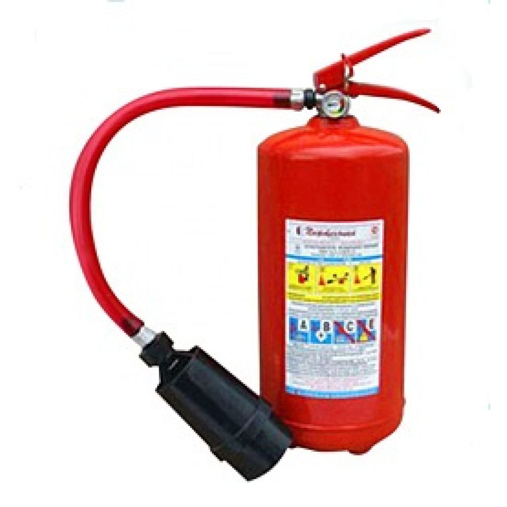

Воздушно-пенные огнетушители
Огнетушители воздушно-пенные предназначены для тушения различных веществ и материалов, за исключением щелочных металлов и электроустановок. Огнетушители ОВП обеспечивают подачу воздушно-механической пены. Огнетушащий состав - раствор пенообразователя. Огнетушители воздушно-пенные используются при тушении пожаров класса А и В (дерево, бумага, краска и ГСМ). Эксплуатируются при температуре от +5 до +50 С. Воздушно-пенный огнетушитель – огнетушитель с зарядом водного раствора пенообразующих добавок и специальным насадком, в котором за счёт эжекции воздуха образуется и формируется струя воздушно-механическойя пены (ВМП) низкой и средней кратности. Воздушно-пенный огнетушитель предназначен для тушения пожаров твёрдых (класс А) и жидких горючих веществ (класс В). В комплект огнетушителя входят сменные генераторы пены средней или низкой кратности. Для заправки огнетушителя в качестве зарядов применяются однокомпонентное или многокомпонентное вещества, используемые для приготовления огнетушащего раствора. Заряды для воздушно-пенного огнетушителя изготавливают на основе углеводородных или фторсодержащих ПАВ, при этом использование последних приводит к большой эффективности огнетушителя, особенно при тушении жидких горючих веществ. В то же время этот тип огнетушителя нельзя применять для ликвидации пожаров электрооборудования, находящегося под напряжением (класс Е), для тушения сильно нагретых или расплавленных веществ, а также веществ, бурно реагирующих с водой. По принципу вытеснения огнетушащего раствора воздушно-пенные огнетушители подразделяются на закачные, раствор и корпус которого постоянно находится под давлением вытесняющего газа, и с баллоном высокого давления.
